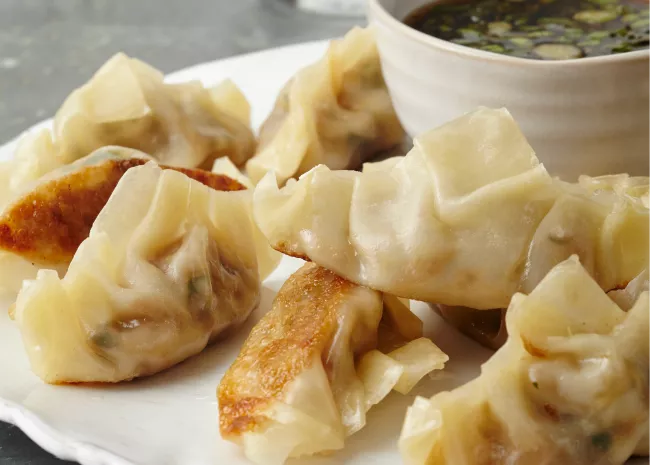

Odin Recipe

Description: Hamborgor
Ingredients for the Burger
- Bread
- Cucumber
- Tomato
- Cheese
- Meat
- Lettuce
Steps to make a burger:
- Preheat an outdoor grill for high heat and lightly oil grate.
- Whisk together egg, salt, and pepper in a medium bowl. ...
- Add ground beef and bread crumbs and mix with your hands or a fork until well blended. ...
- Form into four 3/4-inch-thick patties. ...
- Place patties on the preheated grill
- Serve hot and enjoy!

Description: Sushi Rolls
Ingredients for Sushi
- 1 ⅓ cups sushi rice
- 1 (4 inch) piece dashi kombu (dried kelp)
- 3 cups water
- 2 tablespoons rice wine
- 2 tablespoons sugar
- ¾ teaspoon salt
- 4 Nori seaweed sheets
- desired fillings
Steps to make a burger:
- Put rice into a large deep bowl. Fill with cold water and rub rice together with hands until water turns milky white. Drain cloudy water, being careful not to pour out rice. Repeat three or four times until you can see rice through 3 inches of water; drain once more.
- Whisk together egg, salt, and pepper in a medium bowl. ...
- Transfer rice to a saucepan; add kombu and 3 cups water. Let stand 30 minutes. Cover; bring to a boil over high heat. Reduce heat to low; simmer 10 minutes. Remove from heat and let stand, covered, 5 minutes.
- Meanwhile, stir together rice vinegar, sugar, and salt in a small bowl until dissolved.
- Remove and discard kombu; stir in vinegar mixture until no lumps remain. Spread rice mixture onto a rimmed 9x13 baking sheet. [Spreading helps cool rice and prevents it from continuing to cook.] Let cool to room temperature.
- Lay one sheet of nori on a sushi mat lined with plastic wrap; spread 1 cup of rice over nori with damp fingers, leaving a 1-inch border along one edge. Arrange desired fillings (see below) crosswise just off center of rice. Carefully lift filled edge of nori and roll over filling toward unfilled edge, tucking as you roll. Brush unfilled edge of nori with water; press to seal. Cut each roll into 8 pieces. Repeat with remaining nori, rice, and fillings. To make ahead, chill, covered, up to 4 hours.

Description: Pork Dumplings
Ingredients for Chinese Pork Dumplings
- 100 (3.5 inch square) wonton wrappers
- 1 ¾ pounds ground pork
- 1 tablespoon minced fresh ginger root
- 4 cloves garlic, minced
- 2 tablespoons thinly sliced green onion
- 4 tablespoons soy sauce
- 3 tablespoons sesame oil
- 1 egg, beaten
- 5 cups finely shredded Chinese cabbage
Steps to make a burger:
- In a large bowl, combine the pork, ginger, garlic, green onion, soy sauce, sesame oil, egg and cabbage. Stir until well mixed.
- Place 1 heaping teaspoon of pork filling onto each wonton skin. Moisten edges with water and fold edges over to form a triangle shape. Roll edges slightly to seal in filling. Set dumplings aside on a lightly floured surface until ready to cook.
- Arrange dumplings in a covered bamboo or metal steamer so they don't touch to prevent them from sticking together; steam for 15 minutes, or until pork is cooked through.
- Serve hot and enjoy!